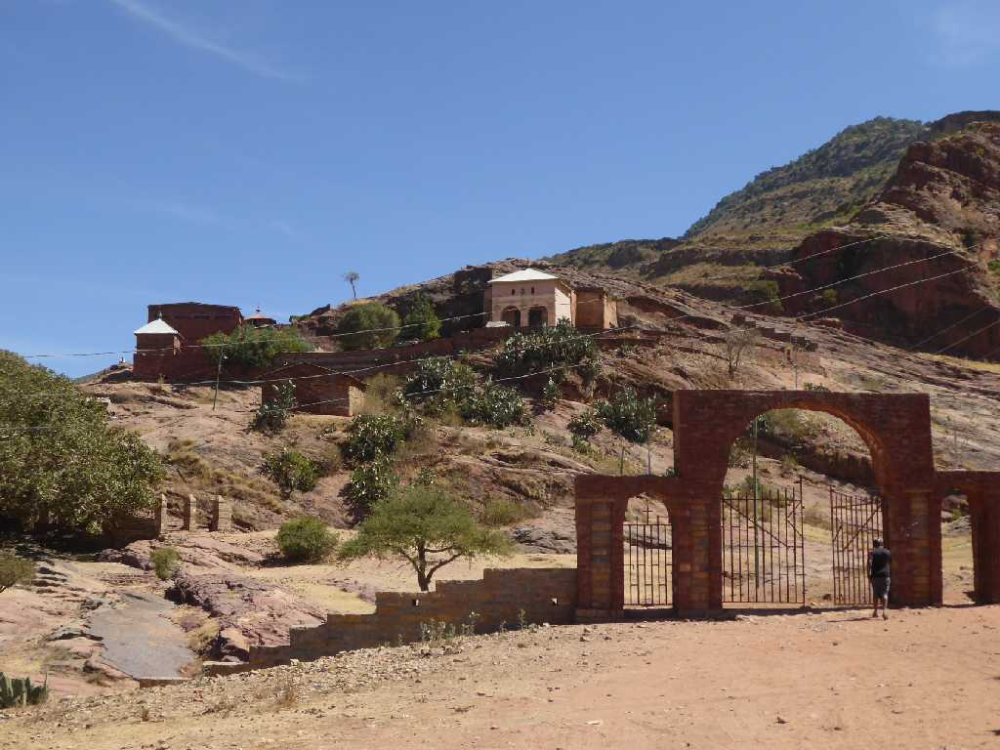
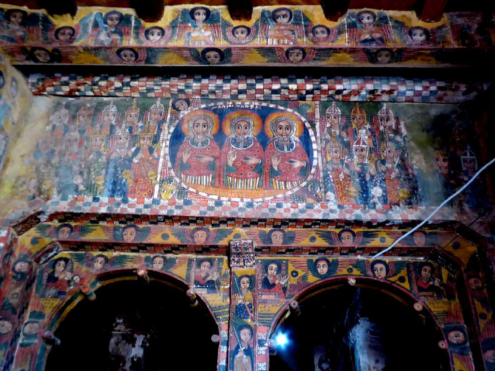
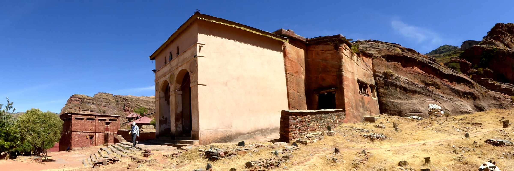
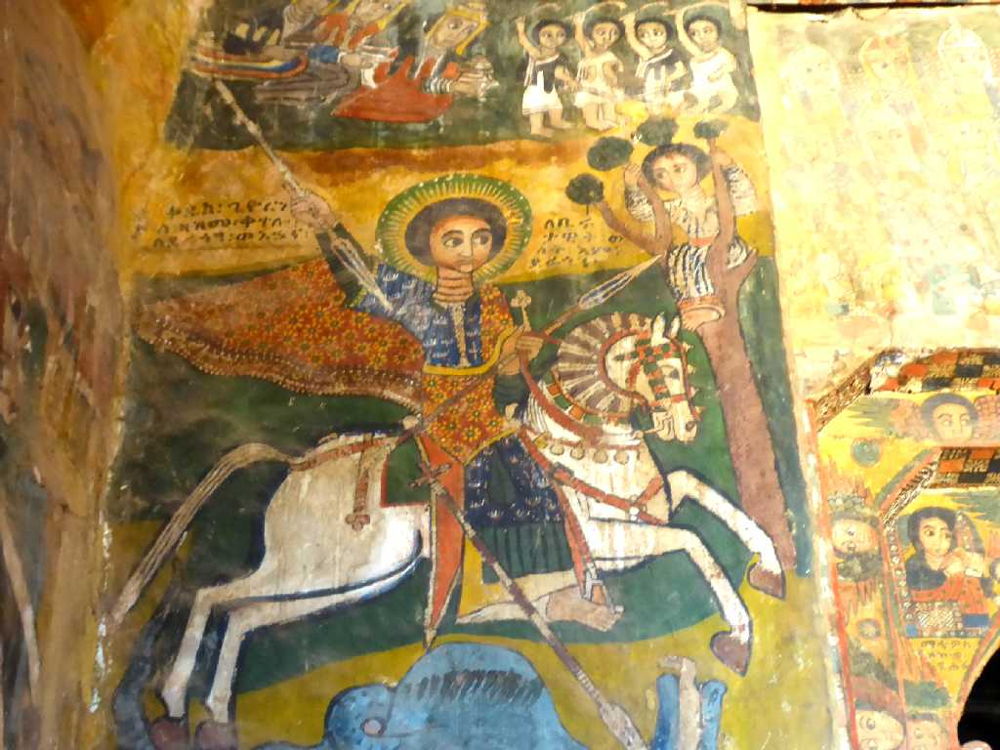
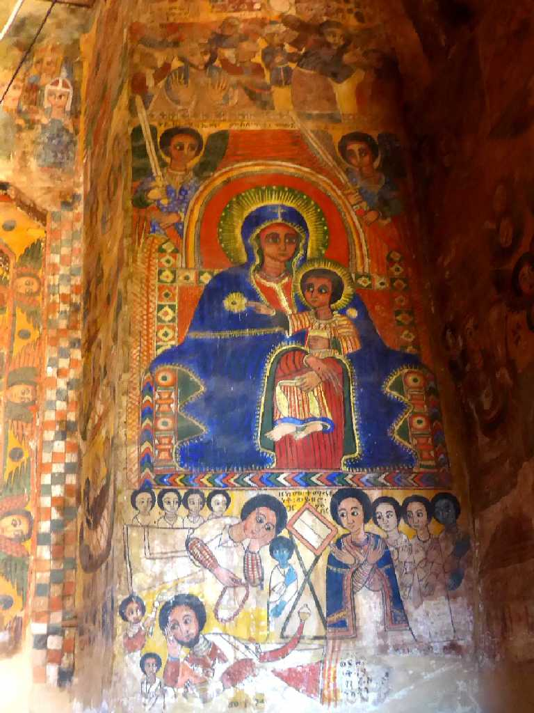
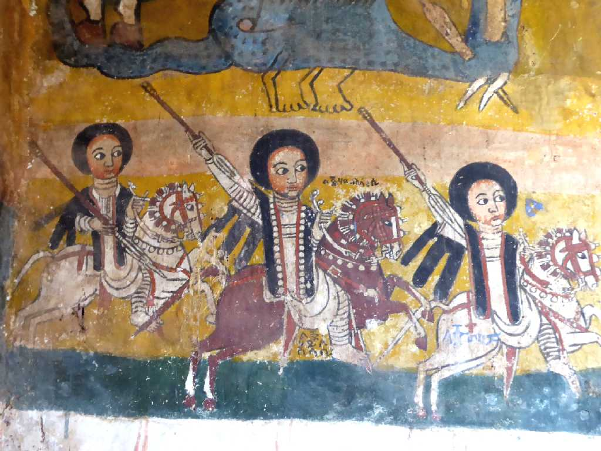
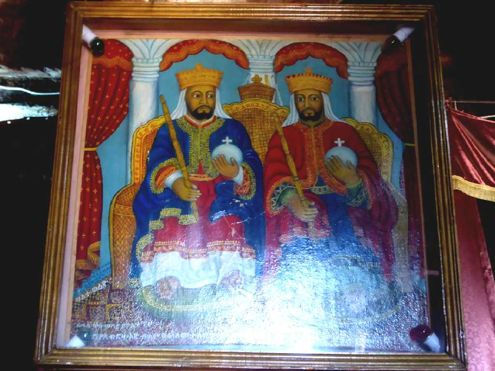
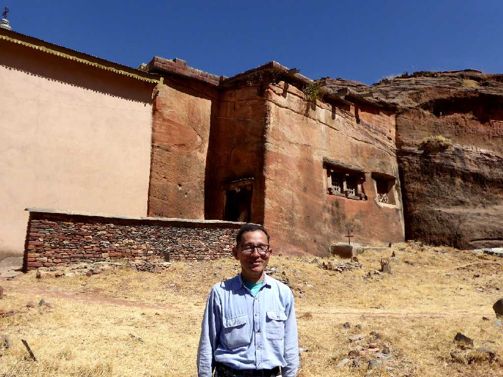

Abreha Atsbeha Mekelle
キリスト教をエチオピアに伝えたエザナ王により４世紀のアクスム王国時代に創られたと云われるエチオピア正教のアブレハアッバハ教会

Trinitarian Entrance Abreha Atsbeha
アブレハはエザナ王の洗礼名

Abreha Atsbeha
アブレハアッバハ教会は岩窟の入口を増設した岩窟教会

St. Georg Fresco Abreha Atsbeha
龍を退治する聖ゲオルグ

Madonna and Child Fresco Abreha Atsbeha
聖母子

Fresco Abreha Atsbeha

Icon Abreha Atsbeha

January 25 2017 Abreha Atsbeha